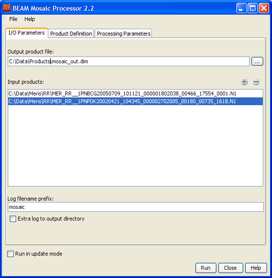
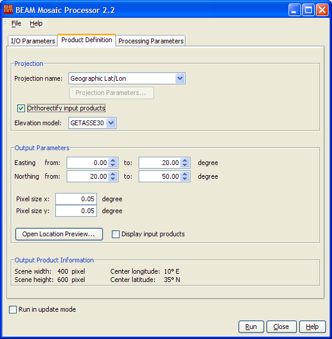
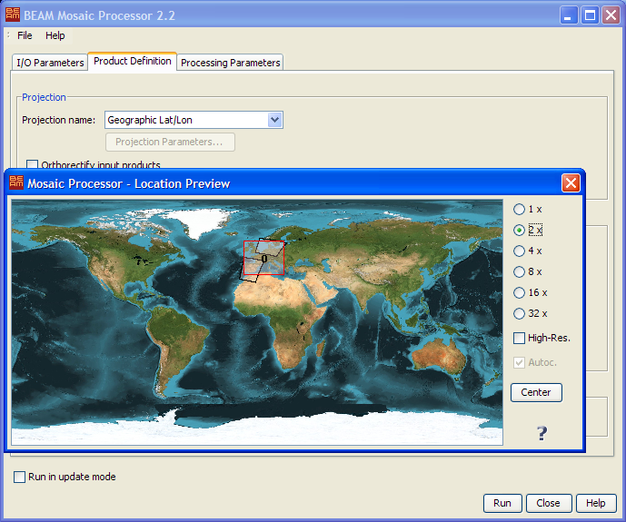
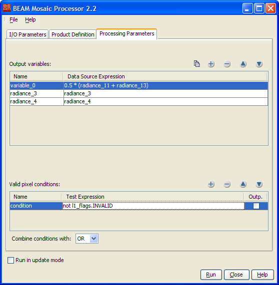

| BEAM Level 3 Mosaic Processing Description |
|
This chapter describes The Mosaic Processor User Interface and The Mosaic Processing Request File.
Please note: The chapter BEAM Scientific Data Processors provides a general description for all BEAM data processors. It describes the common graphical user interface (GUI), the command-line interface and the common processing request file format.

Output product file: The one and only output product. This parameter must be specified.
Input products: The list of input products. Klick on the plus sign to open a file select box used to open multiple input products. Klick on the minus sign to remove selected input products.
Log filename prefix: The filename prefix for the generated log file. Log files are located in
in the log folder of the BEAM installation folder.
Extra log to output directory: If selected, a copy of the log file is written to the output directy given by the output product path.
Run in update mode: If selected, all processing parameters are taken from the output product which must already exists. Modification of all parameters is disabled in this mode. If 'Run' is pressed, the output product is updated with the given input files. If not selected, a new mosaic output product will be created and updated with the selected input products.

Projection name: The name of the map projection to be used for the output product. For a description of the available map-projections, please refer to the chapter Available Map Projections.
Projection Parameters: Opens a dialog where you can adjust the default projection parameters.
Orthorectify input products: Specifies if the input products will be orthorectified or not.
Elevation model: You can select which elevation model will be used. For more information refer to Orthorectification
Easting: Specifies the easting range in degree which is guranteed to be within the geographical boundary of the output product.
Northing: Specifies the northing range in degree which is guranteed to be within the geographical boundary of the output product.
Pixel size: Specifies the pixel size in X and Y direction of the output product in map units.
Open Location Preview: Opens a world map in which the geographical boundary of the resulting output product is displayed.
Display input products: If selected, the input product boundaries are also displayed in the preview.


Output variables: Defines the list of output variables. A variable is composed of a name and a data source
expression.
The expression can be composed of mathematical operators, functions and symbols referencing the flags and bands
defined in the input products, e.g. "0.5 * (radiance_11 + radiance_13)" or
even boolean expressions such as "(radiance_13 > 50.0) AND NOT l1_flags.INVALID".
By double-clicking into the expression field you can open the BEAM expression editor.
Valid pixel conditions: Defines the list of valid pixel conditions. A condition is composed of a name and a
test expression.
The boolean test expression can be composed of mathematical operators, functions and symbols referencing the flags
and bands
defined in the input products, e.g. "(radiance_13 > 50.0) AND NOT l1_flags.INVALID".
By double-clicking into the expression field you can open the BEAM expression editor. By selecting the
'Outp.' toggle you can output the number of times a condition returned "true" for an output product pixel.
Combine conditions with: If more than one valid pixel condition is given, they are combined using the
condition operator which can take the values AND or OR. If the value is AND
all criteria must be fulfilled to consider a given pixel in the output product.
Provided here are two examples of mosaic processing request files:
The following tables describe the Mosaic Processor specific output and processing parameters. For a detailed description of the processing request file concept and file specification in general please refer to chapter Processing Request Files.
Note: Since BEAM 3.5 it is possible to use pixel-based geo-codings in the Mosaic Processor when running it with an request file from the command line. See the last four parameter descriptions in the following list. Please refer also to the section Tools -> Product Generation Tools -> Pixel-based Geo-Coding.
| Parameter name | Description | Type |
|---|---|---|
type |
Request type. Mandatory attribute of the Request element. Value is "MOSAIC". |
String |
update_mode |
If set to "true" the output product must exists and be a valid moisaic product.
Processing parameters are obtained from this output product. The output product is then updated with the
supplied
input products. If set to "true" an initial output product is created and updated with the given
input products. |
Boolean |
projection_name |
The name of a map-projection known by BEAM. For valid map-projection names, please refer to the chapter Available Map Projections. Mandatory parameter if not in update mode, no default value provided. | String |
projection_parameters |
Comma-separated list of projection specific parameters. For valid map-projection values, please refer to the chapter Available Map Projections. You can also refer to VISAT's map-projection tool under Projection Parameters. Parameters are entered there in the same units and same order. |
List of numbers |
orthorectification |
If set to "true" the output product is orthorectified. If not given the default
("false") is used. |
Boolean |
orthorectification_dem |
The name of the digital elevation model which is used for orthorectification. If not specified or not available, the elvevation provided by the input product is used. | String |
pixel_size_x |
The pixel size in map units in X direction of the output map, e.g degree for Geographic Lat/Lon, meters for UTM, Transverse Mercator and Lambert Conformal Conic. Mandatory parameter if not in update mode, no default value. | Number |
pixel_size_y |
The pixel size in map units in Y direction of the output map, e.g degree for Geographic Lat/Lon, meters for UTM, Transverse Mercator and Lambert Conformal Conic. Mandatory parameter if not in update mode, no default value. | Number |
| west_lon | The west longitude in degree which is guaranteed to be within the resulting geographical boundary of the output map. Mandatory parameter if not in update mode, no default value. | Number |
| east_lon | The east longitude in degree which is guaranteed to be within the resulting geographical boundary of the output map. Mandatory parameter if not in update mode, no default value. | Number |
| north_lat | The north latitude in degree which is guaranteed to be within the resulting geographical boundary of the output map. Mandatory parameter if not in update mode, no default value. | Number |
| south_lat | The south latitude in degree which is guaranteed to be within the resulting geographical boundary of the output map. Mandatory parameter if not in update mode, no default value. | Number |
| geocoding_latitudes | The band containing latitude values to process a product with a PixelGeoCoding. | String |
| geocoding_longitudes | The band containing longitude values to process a product with a PixelGeoCoding. | String |
| geocoding_valid_mask | The valid mask expression is used to identify valid lat/lon pairs, e.g. "NOT l1_flags.INVALID".
Can be null if a valid mask is not used. |
String |
| geocoding_search_radius | The search radius in pixels, shall depend on the actual spatial scene resolution, e.g. for 300 meter pixels a search radius of 5 is a good choice. | Number |
| Parameter name | Description | Type |
|---|---|---|
varname.expression |
Defines the output variable varname with the given expression value. The expression can be
composed of mathematical operators, functions and symbols referencing the flags and bands
defined in the input products, e.g. "0.5 * (radiance_11 + radiance_13)" or
even boolean expressions such as "(radiance_13 > 50.0) AND NOT l1_flags.INVALID".
If varname.condition is "false" a band named varname is
created in the output product. Multiple output variable can be defined.
|
String |
varname.condition |
Defines varname as valid pixel criteria to be used to decide whether or not an input pixel value
shall be considered or not. Values are "true" or "false". Valid pixel conditions
are
not written to the output product by default. The default value is "false".
Multiple valid pixel conditions can be defined.
|
Boolean |
varname.output |
If "true", a band named varname of type integer is created in the output product,
and filled with the counts how many times the valid pixel condition varname was fulfilled
for the output product. If "false", no output occurs. The default value is "false"
, so
that no output for the valid pixel conditions varname.
|
Boolean |
condition_operator |
If more than one valid pixel condition is given, they are combined using the condition operator which can
take the
values "AND" or "OR". If value is "AND" all criteria must be
fulfilled to
consider the current pixel in the output product. If value is "OR" a single criteria must be
fulfilled.
|
String |